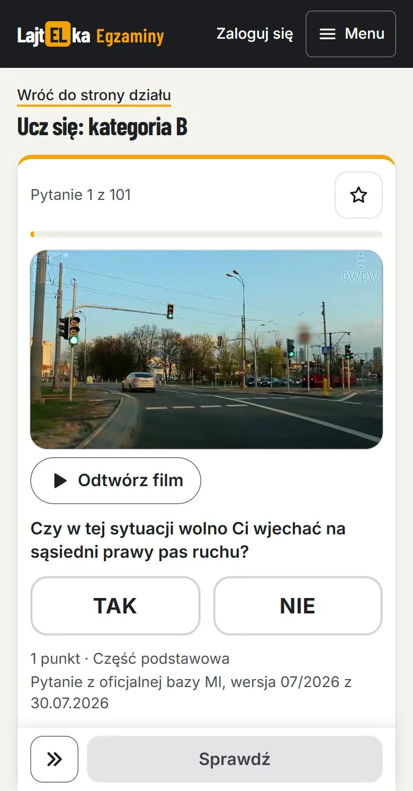
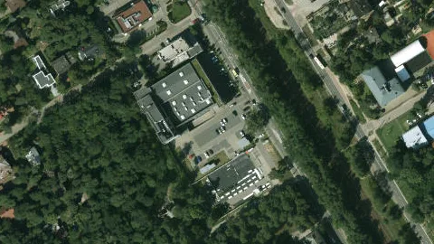
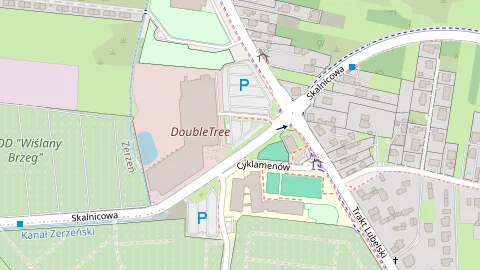
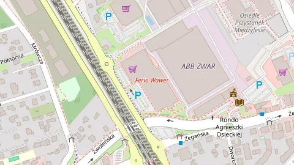
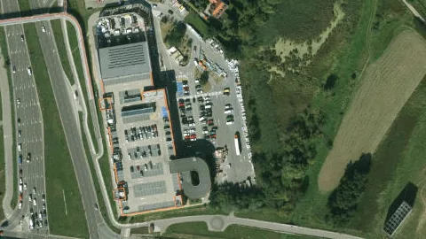
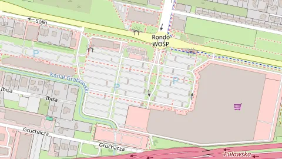
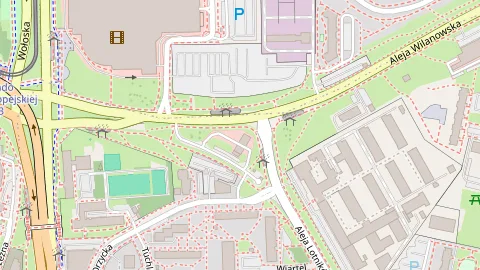
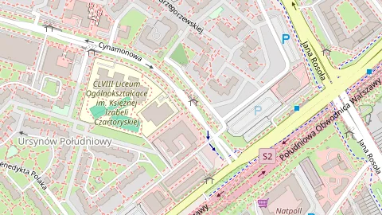
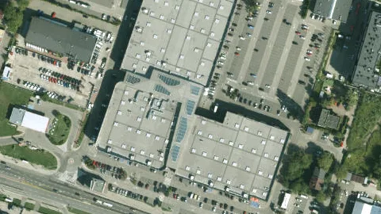
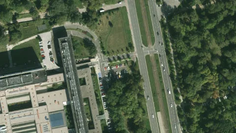

Back behind the wheel
For people who already hold a licence but haven’t driven in a long time. A calm pace, getting used to the car, city traffic and current rules again — no stress, no judgement.
More about lessons after a break (in Polish) →Warsaw · Wawer, Mokotów and the surrounding area
Brush up your skills after a break, prepare for your exam on the exact WORD routes, or book an individual lesson built around what you need.
See available timesRefresher lessons
Three ways to feel confident on the road.
For people who already hold a licence but haven’t driven in a long time. A calm pace, getting used to the car, city traffic and current rules again — no stress, no judgement.
More about lessons after a break (in Polish) →Driving the actual exam routes, so exam day isn’t the first time you see them.
Parallel and perpendicular parking, fast-traffic roads, night driving, difficult conditions — a programme built around whatever you need right now.
I also run refresher driving lessons in English, at the same price as in Polish. This is my start in teaching in a foreign language, so I treat it as a shared experience — if you’re looking for someone with years of practice in English, also check out Instructor Khaled’s offer.
Lessons are also available in English and Arabic — taught by instructor Khaled as part of ALP.
See the ALP offer ↓Available slots
Available times for the coming weeks. Choose a meeting point, the lesson length and a time, then send a short form — the time will be provisionally reserved for you straight away.
We usually meet around Wawer, but if the commute doesn’t suit you, just message me and we’ll agree on another spot. Message or call to arrange a time and details – the longer you put it off, the longer the stress waits for „someday” :P
Loading available times…
Category B instructor
Hi, I’m Michael. I’ve been driving since I was 18 – my father was also a driving instructor, so in a way I grew up „behind the wheel”. Before becoming an instructor I built up broad experience driving all kinds of vehicles: taxis, box vans, refuse trucks, gritter-snowplows, street sweepers, excavator-loaders, and category C+E trucks – rigid trucks with drawbar trailers and articulated combinations. Since 2026 I’ve also added motorcycle riding to my licences and experience.
I’ve been working as a category B driving instructor for almost two years. I know the exam routes at Odlewnicza, Bemowo and Grójec very well, and I’m currently getting to know the Garwolin routes as I go.
I’ve recently started running refresher lessons in English too. I’m right at the beginning of this, so don’t expect perfect fluency from me — I see it as a shared experience with the student. If you’d like to practise the language along the way, with no pressure and no judgement, you’re welcome to book.
I try to explain all the rules and exam techniques exactly as they’re written in the actual laws and their annexes, so you understand not just how to pass the exam, but precisely what the examiner is looking at when assessing your driving – so you know exactly what the exam rules are, what earns a pass, what counts as a minor fault, and what causes an instant fail. I like this angle, because it teaches you a bit from the examiner’s side rather than just as a candidate – you know your rights during the exam.
I know the exam routes very well, especially at Odlewnicza – students sometimes take their actual exam on the exact route we practised, doing the manoeuvres in the exact same spots. Then Bemowo and Grójec, and finally Garwolin – the one I’ve had the least chance to drive so far.
If you already hold a licence but haven’t sat behind the wheel in a while – you don’t need an exam on the horizon to practise with me. Many of my students come back to driving after years away – after having a child, moving city, or simply not having had the opportunity – and start out feeling unsure or stressed at the very thought of heading out onto the street. Together we rebuild your confidence at your own pace: from quiet residential streets, through parking and manoeuvres, up to busier traffic if that’s what you need. No judgement, no rush – just real practice to help you feel at ease behind the wheel again.
With me, lessons run in a friendly, relaxed atmosphere, while staying professional about the actual teaching. I don’t like rudeness, so I’m not artificially nice either – I try to just be myself. I have experience working at Babska Autoszkoła with all kinds of students – the vast majority were happy with how I taught them. I try to keep things friendly, because we do spend a good few hours – sometimes dozens of them – behind the wheel together, talking about more than just driving – for some people it even turns into a bit of therapy, once they trust me enough to open up.
Best wishes to all my students – those who’ve already passed, those still preparing for their exam, and those who simply came to brush up their skills. I hope you all have a long, safe road ahead.
Category B theory test online
Get ready for the category B driving theory test. Category B questions from the official question bank of the Polish Ministry of Infrastructure, with photos and videos. The service is currently in Polish.
Full access comes with refresher driving lessons at LajtELka, or costs 100 zł a month.

ALP Driving School
Khaled ran the ALP driving school and has over 20 years of experience teaching drivers, both in Poland and abroad. Lessons are taught in English, Arabic, and Polish.
Pricing is individual — get in touch to talk through what you need and agree on a rate.
Khaled doesn't use e-mail or an online form for this — the fastest way to reach him is by SMS, WhatsApp, or a phone call.
Clear pricing
One hourly rate, no hidden costs.
A single lesson is 2 to 4 hours — the 10-hour package is split across several sessions, arranged when you get in touch.
Regular students pay less — 10–15 zł/h below the prices above. Details once we’re working together regularly.
Same prices in English (this applies to lessons with me — for lessons with Instructor Khaled in English/Arabic, pricing is individual, see his section).
Google reviews
Real student reviews — straight from the Google listing and messages after passed exams.
The reviews below are screenshots, shown exactly as they were left — most are in Polish, since that’s the language most students write in. A few are already in English or Arabic.
Photos & videos
Students who agreed to have their photo published, plus footage from the manoeuvring yard.
Questions and answers
160 zł per hour: 2 hours is 320 zł, 3 hours – 480 zł, 4 hours – 640 zł. A 10-hour package costs 1500 zł (150 zł/h). At the additional meeting spots I add 15 zł/h for travel — the schedule shows the exact price next to every time slot.
Between 2 and 4 hours. The 10-hour package is split across several sessions — we agree the dates when you get in touch.
Yes — refresher lessons are for people with a valid category B licence, which you show me before the lesson. You don’t need an exam coming up: it’s enough that you want to brush up your skills or get back behind the wheel after a break.
Usually in Wawer. At the main meeting spots there’s no travel charge: Będzińska / K&M Park, Zerzeń / DoubleTree by Hilton and Ferio Wawer. There are also additional spots in other parts of Warsaw (listed in the Contact section), and another place can be agreed by phone.
In the schedule, sign in with a code from your e-mail (no password), pick a meeting point, the lesson length and a time, then send your booking — the slot is provisionally booked, and I confirm it by e-mail, text or phone. You can also just call: +48 690 360 164.
Once we agree the date, you pay an 80 zł deposit by BLIK to 690 360 164 (or a regular bank transfer if you prefer), and the rest before or after the lesson. There are no online payments on the site.
Yes, free of charge up to 24 hours before the lesson — the deposit moves to the new date or I refund it. If you cancel later, the deposit may be forfeited. Details in the Terms of Service.
Yes, at the same price as in Polish — I’m just starting out teaching in English. If you’re looking for an instructor with many years of experience in English or Arabic, see Instructor Khaled’s offer (ALP).
I also run courses, but at another driving school. If you’re interested, please get in touch. Refresher lessons on their own aren’t a driving-school course, so I don’t issue certificates for them — a receipt is available on request.
Book a lesson
Instructor: Michael
Phone: 690 360 164
E-mail: MichaelRabti@gmail.com
Service area: Wawer, Mokotów and the surrounding Warsaw area — other districts by arrangement.
Instructor: Khaled (ALP Driving School)
Phone: 570 971 757
Contact: SMS, WhatsApp or a phone call — no e-mail or online form.
Languages: English, Arabic, Polish.
Free of charge

Open in Google Maps ↗ : Będzińska / K&M ParkFree of charge

Open in Google Maps ↗ : Zerzeń / DoubleTree by HiltonFree of charge

Open in Google Maps ↗ : Ferio WawerSatellite imagery: © Esri, Maxar, Earthstar Geographics
To be agreed by phone

Open in Google Maps ↗ : Bricoman Warszawa WilanówTo be agreed by phone

Open in Google Maps ↗ : Auchan Puławska 427To be agreed by phone

Open in Google Maps ↗ : Stacja Shell koło Galerii MokotówTo be agreed by phone

Open in Google Maps ↗ : Parking Cynamonowa 4 (koło dealera Mazdy)To be agreed by phone

Open in Google Maps ↗ : Łopuszańska 22To be agreed by phone

Open in Google Maps ↗ : al. Niepodległości 213 — parking pod Biblioteką NarodowąSatellite imagery: © Esri, Maxar, Earthstar Geographics
A lesson at one of these points costs 175 zł/h (a 15 zł/h travel surcharge) — unless I’m already nearby that day because I have a lesson at the same or a neighbouring point; then it’s 160 zł/h. The schedule shows the exact price next to every time.